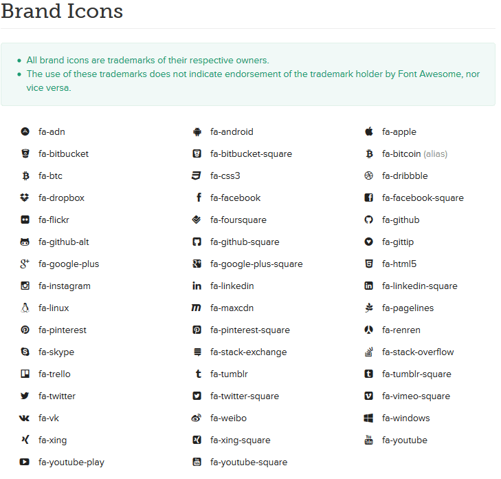
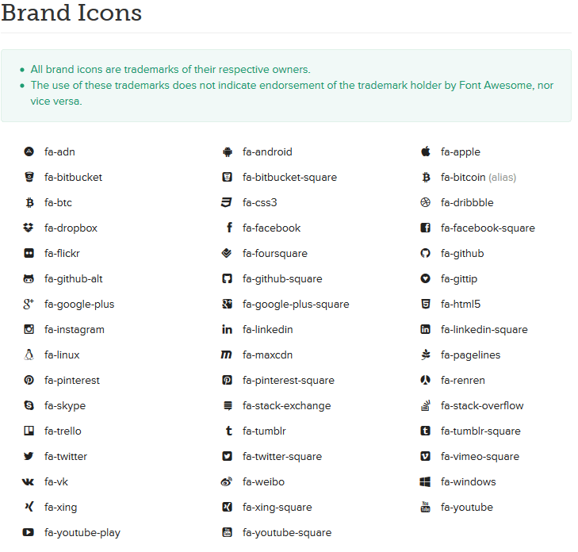

Copyright jThemes Studio 2014
made with the Documenter v2
Traveline
Booking HTML/CSS Template
Traveline is a clean and clear booking HTML/CSS template for travel agencies. With green, designed to bring a professional feel and freshness. Template designed for conversion into Wordpress, Joomla and other systems. In line with modern design trends, creative and smart. This is a great choice!
Thank you for purchasing our theme. If you have any questions that are beyond the scope of this help file, please feel free to email us.
Files Structure
- demo (Style switcher)
- images (All Images)
- inc (All external libs. We keep all of them in this folder to make updates easily.)
- less (Template LESS)
- styles (Template CSS)
HTML Structure
The template is based on Bootstrap Framework - http://getbootstrap.com/
The default Bootstrap grid system utilizes 12 columns, making for a 1170px wide depending on your viewport.
Below 480px viewports, the columns become fluid and stack vertically.
Create a .row and add the appropriate number of .col-sm-* columns.
jQuery - is a Javascript library that greatly reduces the amount of code that you must write.
For more information, please visit http://www.jquery.com/
All the JavaScript libraries and files are included at the bottom of every HTML page like this:
The initializations and parameters (sliders, effects, etc.) are contained in inc/js/custom.js
Fonts
To change the embedded font, please take a look in the head part of assets/css/theme.css:
We are using FontAwesome for social media icons in this template. Insert icons like this:
Here's the complete list of available icons from FontAwesome docs:

Google map
Open js/custom.js file and find below variables:
var homeLang = 53.479324;
var homeLat = -2.248485;
var homeAddress = "
Traveline House
Trafford Wharf Road, Manchester M17 1AB, United Kingdom +44 161 835 3500";
the homeLang is langitude of homepage map position.
the homeLat is latitudeof homepage map position.
the homeAddress is address that should show on homepage map info box.
in other maps (for example in hotel detail page) as you can see in below lines, you should set lang and lat and info variables with data-lang, data-lat and data-info attributes in html area.
Custom Checkbox/SelectBox
We used Chosen and ScrewDefaultButtons plugins to implement custom checkbox and select boxes. you can read more info about it here and here
To have custom checkbox, use this class on them: .custom-checkbox
Remember me on this computer.
To have custom select element, use this class on them: .custom-select
Theme Config
Predefined colors theme list:
styles/themes/default/stylesheet.css
styles/themes/style02/stylesheet02.css
styles/themes/style03/stylesheet03.css
styles/themes/style04/stylesheet04.css
styles/themes/style05/stylesheet05.css
styles/themes/style06/stylesheet06.css
styles/themes/style07/stylesheet07.css
styles/themes/style08/stylesheet08.css
styles/themes/style09/stylesheet09.css
styles/themes/style10/stylesheet10.css
styles/themes/style11/stylesheet11.css
styles/themes/style12/stylesheet12.css
styles/themes/style13/stylesheet13.css
styles/themes/style14/stylesheet14.css
styles/themes/style15/stylesheet15.css
by default set green color 'default/stylesheet.css' and if you wont use different style you need find this code below and change 'default/stylesheet.css' to 'style02/stylesheet02.css'
You can enable/disable theme config panel by commenting this code in html
The countdown is driven by the jQuery Countdown script
You can set you date by open assets/js/theme.js file and change it this code below
austDay = new Date(austDay.getFullYear() + 1, 1 - 1, 26);
A note on Date - the JavaScript Date constructor expects the year, month, and day as parameters. However, the
month ranges from 0 to 11. To make explicit what date is intended (does a month of 3 mean March or April?) I
specify the month from 1 to 12 and manually subtract the 1. Thus the following denotes 25 December, 2014.

Social Media - Icons
We are using FontAwesome for social media icons in this template. Insert icons like this:
Here's the complete list of available icons from FontAwesome docs:
